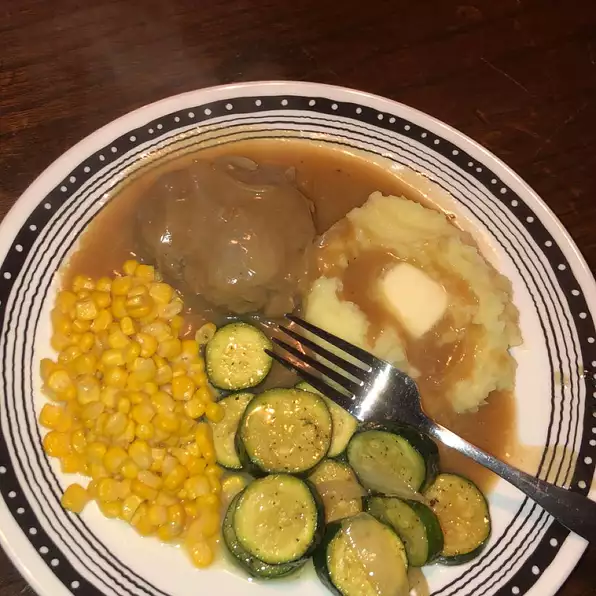

Hamburger Steak With Onions and Gravy

An easy-to-make classic featuring tasty hamburger 'steaks' smothered in gravy
and onions.
Traditionally served with hot white rice or potatoes, it's a great
way to dress up a pound of ground beef and you probably have all the ingredients
on hand!
Ingredients
- 1 pound ground beef
- 1 egg
- ¼ cup bread crumbs
- ⅛ teaspoon ground black pepper
- ½ teaspoon seasoned salt
- ½ teaspoon onion powder
- ½ teaspoon garlic powder
- 1 teaspoon Worcestershire sauce
- 1 tablespoon vegetable oil
- 1 cup thinly sliced onion
- 2 tablespoons all-purpose flour
- 1 cup beef broth
- 1 tablespoon cooking sherry
- ½ teaspoon seasoned salt
Steps
- In a large bowl, mix together the ground beef, egg, bread crumbs, pepper, salt, onion,
powder, garlic powder, and Worcestershire sauce. From into 8 balls, and flatten into
patties.
- Heat the oil in a large skillet over medium heat. Fry the patties and onion in the
oil until patties are nicely browned, about 4 minutes per side. Remove the beef
patties to a plate, and keep warm.
- Sprinkle flour over the onions and drippings in the skillet. Stir in flour with a
fork, scraping bits of beef off of the bottom as you stir. Gradually mix in the beef
broth and sherry. Season with seasoned salt. Simmer and stir over medium-low hear for
about 5 minutes, until the gravy thickens. turn heat to low, return patties to the gravy.
cover, and simmer for another 15 minutes.
Nutrition Facts
Per Serving:
- Calories=319
- Protein=23.1g
- Carbohydrates=13.5g
- Fat=18.5
- Cholesterol=115.3mg
- Sodium=597.2mg